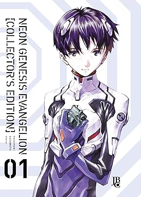

sinopse
Em 2015, 15 anos após uma catástrofe global conhecida como “Segundo Impacto”, o adolescente Shinji Ikari é convocado para a futura cidade da Terceira Cidade por seu pai distante, Gendo Ikari, comandante da força paramilitar especial Nerv, em Tóquio. Shinji testemunha uma batalha entre as forças das Nações Unidas e os Anjos, criaturas de uma raça de monstros gigantes cujo despertar foi profetizado pelos Manuscritos do Mar Morto.
Informações
- Nome: Neon Genesis Evangelion
- Nome alternativo: 新世紀エヴァンゲリオン
- Tipo: Mangá
- Autor: Yoshiyuki Sadamoto
- Volumes: 14
- Status: Completo
- Demográfico: Seinen, Shōnen
- Gêneros: Ação,Monstros,Ficção científica,Drama,Mecha,Apocalíptico,Psicológico
- Editora: Kadokawa Shoten
- Publicado em: 1994